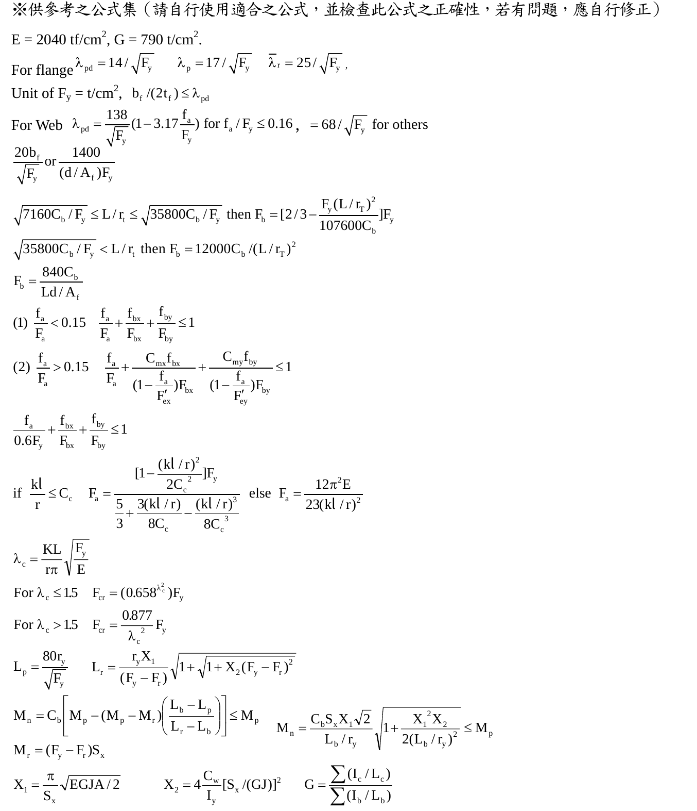
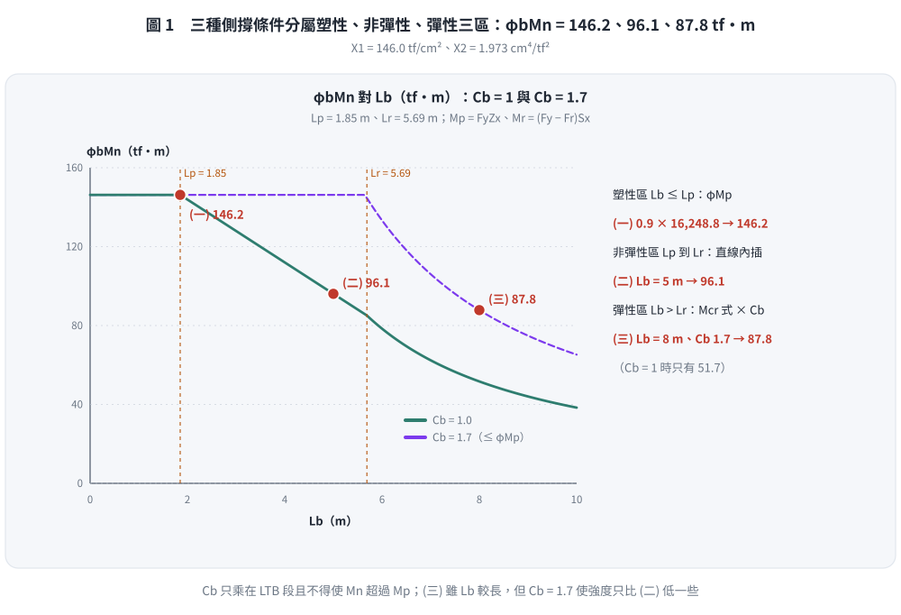
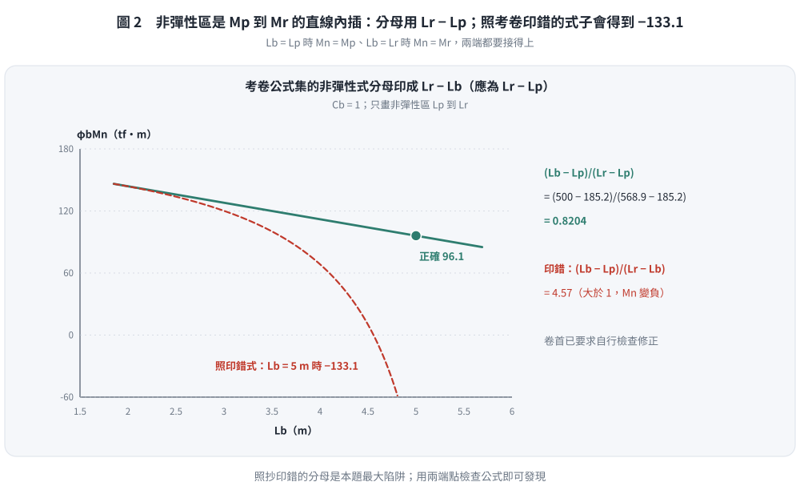

📄 題目正本：考卷原文・附圖・判讀清單（待確認）
SS-2007-3 題目正本
本檔只記錄考卷上寫了什麼、圖上畫了什麼，不含任何解法。解析見同資料夾
SS-2007-3.md。
判讀清單經使用者確認前，狀態為「待確認」；確認後本檔原則上不再修改（改動須回考卷原圖並記 log）。
| 項目 | 內容 |
|---|---|
| 考卷 | raw/exams/SS-2007_鋼結構設計.pdf 第 2 頁（全三頁之第二頁），第三題；公式集在第 3 頁 |
| 考年 | 民國 96 年（2007） |
| 配分 | 25 分（㈠ 8、㈡ 8、㈢ 9） |
| 附圖 | 無；第 3 頁公式集截圖 SS-2007-3-eqn-1.png |
| 判讀狀態 | 待確認（轉錄 2026-11-02，PyMuPDF 110 dpi 全頁＋公式集 150 dpi 目視，盲讀後才比對既有解析） |
1. 考卷原文（逐字）
三、試用 LRFD 法計算㈠-㈢之設計彎曲強度（design bending strength）$\phi_bM_n$，樑為 H 700×200×12×25（尺寸 $d \times b_f \times t_w \times t_f$ 之單位為 mm），$F_y$ = 3.5 tf/cm²，條件為：
㈠樑全長均有側向支撐。（8 分）
㈡側向支撐長度為 5m 及 $C_b$ = 1。（8 分）
㈢側向支撐長度為 8m 及 $C_b$ = 1.7。（9 分）
（d = 70 cm, $t_w$ = 1.2 cm, $b_f$ = 20 cm, $t_f$ = 2.5 cm, A = 178 cm², $I_X$ = 141421 cm⁴, $I_Y$ = 3343 cm⁴, $S_X$ = 4040.6 cm³, $S_Y$ = 334.3 cm³, $r_X$ = 28.19 cm, $r_Y$ = 4.33 cm, $Z_X$ = 4642.5 cm³, $Z_Y$ = 523.4 cm³, J = 245.77 cm⁴, $C_w$ = 3807536.63 cm⁶, 殘留應力 $F_r$ = 1.16 tf/cm²）
2. 考卷給的公式、附表與參數
- 題文：H 700×200×12×25 斷面性質（照錄於 §1）；$F_y = 3.5$ tf/cm²；$F_r = 1.16$ tf/cm²；㈡ $L_b = 5$ m、$C_b = 1$；㈢ $L_b = 8$ m、$C_b = 1.7$。
- 第 3 頁「※供參考之公式集（請自行使用適合之公式，並檢查此公式之正確性，若有問題，應自行修正）」，與本題相關者照錄：
$$E = 2040\ \text{tf/cm}^2,\quad G = 790\ \text{t/cm}^2$$
$$\text{For flange: } \lambda_{pd} = 14/\sqrt{F_y},\quad \lambda_p = 17/\sqrt{F_y},\quad \lambda_r = 25/\sqrt{F_y};\quad b_f/(2t_f) \le \lambda_{pd}$$
$$\text{For web: } \lambda_{pd} = \frac{138}{\sqrt{F_y}}\left(1 - 3.17\frac{f_a}{F_y}\right)\ \text{for}\ f_a/F_y \le 0.16,\quad = 68/\sqrt{F_y}\ \text{for others}$$
$$L_p = \frac{80r_y}{\sqrt{F_y}},\qquad L_r = \frac{r_yX_1}{(F_y - F_r)}\sqrt{1 + \sqrt{1 + X_2(F_y - F_r)^2}}$$
$$M_n = C_b\left[M_p - (M_p - M_r)\left(\frac{L_b - L_p}{L_r - L_b}\right)\right] \le M_p,\qquad M_n = \frac{C_bS_xX_1\sqrt2}{L_b/r_y}\sqrt{1 + \frac{X_1^2X_2}{2(L_b/r_y)^2}} \le M_p$$
$$M_r = (F_y - F_r)S_x,\qquad X_1 = \frac{\pi}{S_x}\sqrt{EGJA/2},\qquad X_2 = 4\frac{C_w}{I_y}[S_x/(GJ)]^2$$
注意：考卷的非彈性 $M_n$ 式分母印成 $L_r - L_b$（規範為 $L_r - L_p$）；卷首已要求考生自行檢查修正。
- 公式集截圖：

- 沒有給 $\phi_b$。
- 卷首注意事項：㈠可以使用電子計算器；㈡不必抄題。
3. 附圖
本題無附圖。
4. 判讀清單
「把握」標不確定者請優先確認；解讀類項目（題目用字的意思）另標「解讀」。
| # | 項目 | 判讀 | 圖上／題文依據 | 把握 |
|---|---|---|---|---|
| 1 | $E$、$G$ | 用公式集首行 $E = 2040$、$G = 790$ | 第 3 頁 | 確定 |
| 2 | ㈠ | 全長側撐 → 不受 LTB 控制，$M_n$ 由斷面（含寬厚比）決定 | 題文 | 確定（解讀） |
| 3 | ㈡、㈢ | $L_b$ 與 $C_b$ 為題給，不需自算 $C_b$ | 題文 | 確定 |
| 4 | 公式筆誤 | 非彈性 $M_n$ 式分母照規範改為 $L_r - L_p$ | 公式集＋卷首「自行修正」 | 確定 |
| 5 | $\phi_b$ | 題未給，依規範取 0.9 | 題文未給 | 確定（解讀） |
| 6 | 寬厚比 | 是否須檢核翼板／腹板結實性（公式集給了 $\lambda$ 式） | 公式集 | 確定（解讀） |
轉錄：2026-11-02（SS-U1-2 題目正本推廣・批 1）
考題編號：SS-2007-3
主分類： SS-U1-2 梁桿件
副分類： 無
設計法： LRFD
標籤： 梁桿件 LRFD LTB側扭挫屈 非彈性LTB 彈性LTB Cb係數 X1X2參數 Lp Lr φbMn
1. 原始題目重述
H 700×200×12×25（$d \times b_f \times t_w \times t_f$，單位 mm），以 LRFD 求各種側向無支撐長度下的設計彎矩強度 $\phi_b M_n$。
材料： $F_y = 3.5 \text{ tf/cm}^2$，$E = 2040 \text{ tf/cm}^2$，$G = 790 \text{ tf/cm}^2$，殘留應力 $F_r = 1.16 \text{ tf/cm}^2$
斷面性質（題目提供）：
| 性質 | 數值 | 性質 | 數值 | |
|---|---|---|---|---|
| $d$ | 70 cm | $A$ | 178 cm² | |
| $b_f$ | 20 cm | $r_y$ | 4.33 cm | |
| $t_w$ | 1.2 cm | $r_x$ | 28.19 cm | |
| $t_f$ | 2.5 cm | $Z_x$ | 4642.5 cm³ | |
| $I_x$ | 141421 cm⁴ | $S_x$ | 4040.6 cm³ | |
| $I_y$ | 3343 cm⁴ | $S_y$ | 334.3 cm³ | |
| $J$ | 245.77 cm⁴ | $C_w$ | 3807536.63 cm⁶ |
三種計算條件：
- (一) 完全側向支撐（$L_b \leq L_p$）
- (二) $L_b = 5\text{ m}$，$C_b = 1.0$（非彈性 LTB）
- (三) $L_b = 8\text{ m}$，$C_b = 1.7$（彈性 LTB）
（無附圖，斷面性質及條件均以文字給定）
2. 考題核心精神與出題者意圖
本題完整覆蓋 LTB 三個區段（塑性區、非彈性 LTB、彈性 LTB），測試考生能否：
1. 計算 $X_1$、$X_2$ 兩個 LTB 輔助參數
2. 正確計算 $L_p$、$L_r$ 並判斷三個區段
3. 在 $C_b \neq 1$ 時正確套用彈性 LTB 公式
出題意圖：$C_b = 1.7$ 使案例(三)即使 $L_b > L_r$ 也能補償部分強度，讓考生體會 $C_b$ 的作用。
3. 解題戰略地圖與陷阱分析
解題步驟：
1. 確認斷面結實（compact section）
2. 計算 $M_p$、$M_r$
3. 計算 $X_1$、$X_2$（LTB 輔助參數）
4. 計算 $L_p$、$L_r$（LTB 分界長度）
5. 依各條件判斷 LTB 區段，套用對應公式
關鍵陷阱：
1. $X_2$ 的計算：$X_2 = 4(C_w/I_y)[S_x/(GJ)]^2$，各項單位必須一致（cm、tf）
2. $F_r$ 的用途：殘留應力只出現在 $M_r = (F_y - F_r)S_x$ 和 $L_r$ 公式中，不出現在 $M_p$
3. $C_b$ 在彈性 LTB 的乘法位置：$M_n = C_b \times [\cdots] \leq M_p$，要在最後才限制 $M_p$
3.5 變數層次分析（Variable Hierarchy Analysis）
複習提示：解題後，在每個卡住的知識點「卡關?」欄標記
⚠；第二次複習時只看有⚠的項目。
最終目標： 計算 H700×200 三種 $L_b$ 條件下的 $\phi_bM_n$（覆蓋 LTB 三個區段）
主要公式（$\boxed{\phantom{x}}$ = 未知，待推導）
$$\boxed{L_p} = \frac{80r_y}{\sqrt{F_y}},\quad \boxed{L_r} = \frac{r_y X_1}{F_y - F_r}\sqrt{1 + \sqrt{1 + X_2(F_y-F_r)^2}}$$
$$\text{非彈性 LTB：}\boxed{M_n} = C_b\left[M_p - (M_p - M_r)\frac{L_b - L_p}{L_r - L_p}\right] \leq M_p$$
$$\text{彈性 LTB：}\boxed{M_n} = \frac{C_b S_x X_1 \sqrt{2}}{L_b/r_y}\sqrt{1 + \frac{X_1^2 X_2}{2(L_b/r_y)^2}} \leq M_p$$
L1：題目直接給定
| 符號 | 數值 | 說明 |
|---|---|---|
| $F_y$ | 3.5 tf/cm² | 降伏應力 |
| $F_r$ | 1.16 tf/cm² | 殘留應力（壓縮） |
| $E$ | 2040 tf/cm² | 彈性模數 |
| $G$ | 790 tf/cm² | 剪切模數 |
| $r_y$ | 4.33 cm | 弱軸迴轉半徑 |
| $Z_x$ | 4642.5 cm³ | 塑性斷面模數 |
| $S_x$ | 4040.6 cm³ | 彈性斷面模數 |
| $I_y$ | 3343 cm⁴ | 弱軸慣性矩 |
| $J$ | 245.77 cm⁴ | 聖維南扭轉常數 |
| $C_w$ | 3807536.63 cm⁶ | 翹曲常數 |
| $A$ | 178 cm² | 斷面積 |
L2：需知識點推導
Step 1：基本強度參數
| 符號 | 公式 / 來源 | 卡關? |
|---|---|---|
| $M_p$ | $F_y Z_x = 3.5 \times 4642.5 = 16249$ tf·cm | |
| $M_r$ | $(F_y - F_r)S_x = 2.34 \times 4040.6 = 9455$ tf·cm |
Step 2：LTB 輔助參數 X₁、X₂
| 符號 | 公式 / 來源 | 卡關? |
|---|---|---|
| $X_1$ | $\frac{\pi}{S_x}\sqrt{\frac{EGJA}{2}} = 146.0$ tf/cm² | |
| $GJ$ | $790 \times 245.77 = 194158$ tf·cm² | |
| $X_2$ | $\frac{4C_w}{I_y}\left(\frac{S_x}{GJ}\right)^2 = 1.973$ cm⁴/tf² |
Step 3：LTB 分界長度 Lp、Lr
| 符號 | 公式 / 來源 | 卡關? |
|---|---|---|
| $L_p$ | $80r_y/\sqrt{F_y} = 80 \times 4.33/1.871 = 185.1$ cm | |
| $\sqrt{1 + X_2(F_y-F_r)^2}$ | $\sqrt{1 + 1.973 \times 2.34^2} = \sqrt{11.80} = 3.436$ | |
| $L_r$ | $r_y X_1/(F_y-F_r) \times \sqrt{1+3.436} = 568.9$ cm |
Step 4：三案例 $\phi_bM_n$
| 案例 | $L_b$ | $C_b$ | 區段 | $\phi_bM_n$ | 卡關? |
|---|---|---|---|---|---|
| (一) | $\leq L_p$ | — | 塑性 | 146.2 tf·m | |
| (二) | 500 cm | 1.0 | 非彈性 LTB | 96.1 tf·m | |
| (三) | 800 cm | 1.7 | 彈性 LTB | 87.8 tf·m |
L3：深層知識（不懂就卡住）
| 知識點 | 說明 | 卡關? |
|---|---|---|
| LTB 三段判斷邏輯 | 先算 $L_p$、$L_r$，與 $L_b$ 比大小後才套公式，順序不可顛倒 | |
| $F_r$ 殘留應力的用途 | 只出現在 $M_r = (F_y-F_r)S_x$ 與 $L_r$ 公式中，不出現在 $M_p$ | |
| $X_2$ 公式各項單位一致性 | $C_w$（cm⁶）、$I_y$（cm⁴）、$S_x$（cm³）、$GJ$（tf·cm²），計算前統一單位 | |
| $C_b$ 在彈性 LTB 的乘法位置 | $M_n = C_b \times [\cdots]$，最後才限制 $M_n \leq M_p$，不是先除 $C_b$ 再算 | |
| $X_1$、$X_2$ 的物理意義 | $X_1$：扭轉挫屈應力（tf/cm²）；$X_2$：翹曲相對扭轉貢獻（無因次） |
4. 步驟化詳細計算過程
Step 1：斷面結實性驗算
翼板：
$$\lambda_f = \frac{b_f}{2t_f} = \frac{20}{2 \times 2.5} = 4.0 \leq \frac{17}{\sqrt{F_y}} = 9.08 \implies \text{結實 ✓}$$
腹板（純彎）：
$$\lambda_w = \frac{h}{t_w} = \frac{65}{1.2} = 54.2 \leq \frac{138}{\sqrt{F_y}} = 73.8 \implies \text{結實 ✓}$$
Step 2：基本強度 Mp 與 Mr
$$M_p = F_y Z_x = 3.5 \times 4642.5 = \mathbf{16{,}248.8 \text{ tf}\cdot\text{cm}}$$
$$M_r = (F_y - F_r)S_x = 2.34 \times 4040.6 = \mathbf{9{,}455.0 \text{ tf}\cdot\text{cm}}$$
Step 3：計算輔助參數 X₁ 和 X₂
$$EGJA = 2040 \times 790 \times 245.77 \times 178 = 70{,}503 \times 10^6 \text{ tf}^2 \text{cm}^2$$
$$X_1 = \frac{\pi}{S_x}\sqrt{\frac{EGJA}{2}} = \frac{\pi}{4040.6} \times 187{,}750 = \mathbf{146.0 \text{ tf/cm}^2}$$
$$GJ = 790 \times 245.77 = 194{,}158 \text{ tf}\cdot\text{cm}^2$$
$$X_2 = \frac{4C_w}{I_y}\left[\frac{S_x}{GJ}\right]^2 = 4556.6 \times (0.02081)^2 = \mathbf{1.973 \text{ cm}^4/\text{tf}^2}$$
Step 4：計算 Lp 和 Lr
$$L_p = \frac{80 r_y}{\sqrt{F_y}} = \frac{80 \times 4.33}{1.871} = \mathbf{185.1 \text{ cm} = 1.85 \text{ m}}$$
$$L_r = \frac{r_y X_1}{F_y - F_r}\sqrt{1 + \sqrt{1 + X_2(F_y-F_r)^2}} = \frac{4.33 \times 146.0}{2.34} \times 2.106 = \mathbf{568.9 \text{ cm} \approx 5.69 \text{ m}}$$

圖 1 三種側撐條件分屬塑性、非彈性、彈性三區：$\phi_bM_n = 146.2$、96.1、87.8 tf·m。這張圖攔的是區段判錯、$C_b$ 乘到塑性區或讓 $M_n$ 超過 $M_p$。
案例 (一)：完全側向支撐，Lb ≤ Lp = 1.85 m
$$\boxed{\phi_b M_n = 0.9 \times 16{,}248.8 = 14{,}623.9 \text{ tf}\cdot\text{cm} \approx \mathbf{146.2 \text{ tf}\cdot\text{m}}}$$
案例 (二)：Lb = 5 m = 500 cm，Cb = 1.0（非彈性 LTB）
$$\frac{L_b - L_p}{L_r - L_p} = \frac{500 - 185.1}{568.9 - 185.1} = 0.8204$$
$$M_n = 1.0 \times [16{,}248.8 - 6{,}793.8 \times 0.8204] = 10{,}676.6 \text{ tf}\cdot\text{cm}$$
$$\boxed{\phi_b M_n = 0.9 \times 10{,}676.6 = 9{,}608.9 \text{ tf}\cdot\text{cm} \approx \mathbf{96.1 \text{ tf}\cdot\text{m}}}$$

圖 2 考卷公式集把非彈性式分母印成 $L_r - L_b$；正確是 $L_r - L_p$，用兩端點 $M_p$、$M_r$ 即可檢查。這張圖攔的是照抄印錯的公式（會得到負的強度）。
案例 (三)：Lb = 8 m = 800 cm，Cb = 1.7（彈性 LTB）
$$\frac{L_b}{r_y} = \frac{800}{4.33} = 184.76 \quad ; \quad \frac{X_1^2 X_2}{2(L_b/r_y)^2} = 0.616$$
$$M_n = 1.7 \times \frac{4040.6 \times 146.0 \times \sqrt{2}}{184.76} \times \sqrt{1.616} = 1.7 \times 5737.3 = 9{,}753.4 \text{ tf}\cdot\text{cm}$$
$$\boxed{\phi_b M_n = 0.9 \times 9{,}753.4 = 8{,}778.1 \text{ tf}\cdot\text{cm} \approx \mathbf{87.8 \text{ tf}\cdot\text{m}}}$$
三案例結果彙整
| 案例 | $L_b$ | $C_b$ | LTB 區段 | $M_n$ (tf·cm) | $\phi_b M_n$ (tf·m) |
|---|---|---|---|---|---|
| (一) | ≤ 1.85 m | — | 塑性區（無 LTB） | 16,249 | 146.2 |
| (二) | 5 m | 1.0 | 非彈性 LTB | 10,677 | 96.1 |
| (三) | 8 m | 1.7 | 彈性 LTB | 9,753 | 87.8 |
5. 關鍵爭議點與進階探討
$C_b = 1.7$ 的效益分析
若案例(三)改為 $C_b = 1.0$，則：
$$M_n = \frac{1.0}{1.7} \times 9{,}753.4 = 5{,}737.3 \text{ tf}\cdot\text{cm} \implies \phi_b M_n = 51.6 \text{ tf}\cdot\text{m}$$
$C_b = 1.7$ 使強度從 51.6 tf·m 提升至 87.8 tf·m（提升 70%），清楚展示 $C_b$ 在彈性 LTB 中的放大效益。
X₁、X₂ 的物理意義
- $X_1$ 相當於無側向支撐時的彈性挫屈應力（含扭轉項），單位 tf/cm²
- $X_2 \cdot (F_y - F_r)^2$ 代表翹曲剛度對扭轉勁度的貢獻比（無因次）
- 當 $X_2 \cdot (F_y - F_r)^2 \gg 1$ 時（深而寬翼板），翹曲勁度主導 LTB，$L_r$ 較大
本題斷面特性： H700×200 屬於窄翼板深腹板型（$b_f/d = 200/700 = 0.29$），$r_y = 4.33$ cm 很小，$L_p = 1.85$ m 極短，代表此斷面對 LTB 非常敏感，實際設計中必須仔細檢核側向支撐間距。
圖解補繪：2026-11-03（向量圖 2 張，腳本 gen_SS-2007-3.py，改輸入可原地重跑；SVG 供 wiki／PDF，2× PNG 供 pptx／影片）